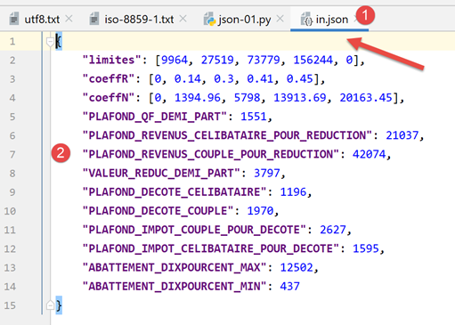
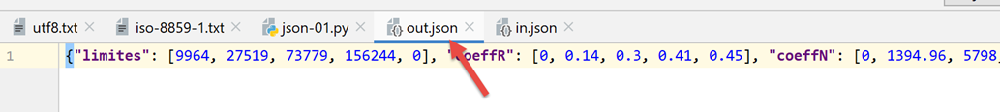

7. Les fichiers texte

7.1. Script [fic_01] : lecture / écriture d'un fichier texte
Le script suivant illustre un exemple d'exploitation de fichiers texte :
- # imports
- import sys
- # création puis exploitation séquentielle d'un fichier texte
- # celui-ci est un ensemble de lignes de la forme login:pwd:uid:gid:infos:dir:shell
- # chaque ligne est mis dans un dictionnaire sous la forme login => uid:gid:infos:dir:shell
- # --------------------------------------------------------------------------
- def affiche_infos(dico: dict, clé: str):
- # affiche la valeur associée à clé dans le dictionnaire dico si elle existe
- if clé in dico.keys():
- # on affiche la valeur associée à la clé
- print(f"{clé} : {dico[clé]}")
- else:
- # clé n'est pas une clé du dictionnaire dico
- print(f"la clé [{clé}] n'existe pas")
- # main -----------------------------------------------
- # on fixe le nom du fichier
- FILE_NAME = "./data/infos.txt"
- # création et remplissage du fichier texte
- fic = None
- try:
- # ouverture du fichier en écriture (w=write)
- fic = open(FILE_NAME, "w")
- # on génère un contenu arbitraire
- for i in range(1, 101):
- # une ligne
- ligne = f"login{i}:pwd{i}:uid{i}:gid{i}:infos{i}:dir{i}:shell{i}"
- # est écrite dans le fichier texte
- fic.write(f"{ligne}\n")
- except IOError as erreur:
- print(f"Erreur d'exploitation du fichier {FILE_NAME} : {erreur}")
- sys.exit()
- finally:
- # on ferme le fichier s'il a été ouvert
- if fic:
- fic.close()
- # on l'ouvre en lecture
- fic = None
- try:
- # ouverture du fichier en lecture
- fic = open(FILE_NAME, "r")
- # dictionnaire vide au départ
- dico = {}
- # chaque ligne est mis dans le dictionnaire [dico] sous la forme login => uid:gid:infos:dir:shell
- # lecture 1ère ligne en enlevant espaces de début et fin de ligne
- ligne = fic.readline().strip()
- # tant que la ligne n'est pas vide
- while ligne != '':
- # on met la ligne dans un tableau
- infos = ligne.split(":")
- # on récupère le login
- login = infos[0]
- # on néglige le pwd
- infos[0:2] = []
- # on crée une entrée dans le dictionnaire
- dico[login] = infos
- # lecture ligne suivante
- ligne = fic.readline().strip()
- except IOError as erreur:
- print(f"Erreur d'exploitation du fichier {FILE_NAME} : {erreur}")
- sys.exit()
- finally:
- # on ferme le fichier s'il a été ouvert
- if fic:
- fic.close()
- # exploitation du dictionnaire dico
- affiche_infos(dico, "login10")
- affiche_infos(dico, "X")
Notes :
- ligne 28 : ouverture du fichier en écriture (w=write). Si le fichier existe déjà, il sera écrasé ;
- lignes 30-34 : on génère 100 lignes dans le fichier texte ;
- ligne 34 : pour écrire une ligne dans le fichier texte. La méthode [write] ne rajoute pas la marque de fin de ligne. Il faut donc prévoir celle-ci dans le texte écrit ;
- lignes 35-37 : gestion de l'éventuelle exception ;
- ligne 37 : abandon de l'exécution du script (néanmoins après l'exécution de la clause finally) ;
- lignes 38-41 : dans tous les cas, erreur ou pas, on fermet le fichier s'il est ouvert ;
- ligne 47 : ouverture du fichier en lecture (r=read) ;
- ligne 49 : définition d'un dictionnaire vide ;
- ligne 52 : la méthode [readline] lit une ligne de texte, marque de fin de ligne incluse. La méthode [strip] supprime les "espaces" de début et fin de chaîne. Par "espace", il faut entendre caractère blanc, marque de fin de ligne, saut de page, tabulation, et quelques autres. Donc ici, [ligne] n'aura pas les caractères de fin de ligne [\r\n] (windows) ou [\n] (unix) ;
- ligne 54 : on exploite le fichier tant qu'on n'a pas récupéré une ligne vide ;
- lignes 54-64 : le fichier texte est transféré dans le dictionnaire [dico]. La clé est le champ [login], la valeur les champs [uid:gid:infos:dir:shell] ;
- lignes 65-67 : gestion de l'éventuelle exception ;
- lignes 68-71 : fermeture du fichier dans tous les cas, erreur ou pas ;
- lignes 74-75 : exploitation du dictionnaire [dico] ;
Le fichier [data/infos.txt] :
- login0:pwd0:uid0:gid0:infos0:dir0:shell0
- login1:pwd1:uid1:gid1:infos1:dir1:shell1
- login2:pwd2:uid2:gid2:infos2:dir2:shell2
- …
- login98:pwd98:uid98:gid98:infos98:dir98:shell98
- login99:pwd99:uid99:gid99:infos99:dir99:shell99
Les résultats écran :
- C:\Data\st-2020\dev\python\cours-2020\python3-flask-2020\venv\Scripts\python.exe C:/Data/st-2020/dev/python/cours-2020/python3-flask-2020/fichiers/fic_01.py
- login10 : ['uid10', 'gid10', 'infos10', 'dir10', 'shell10']
- la clé [X] n'existe pas
- Process finished with exit code 0
7.2. Script [fic_02] : gérer des fichiers texte encodés en UTF-8
Dans la suite du document, nous allons gérer des fichiers texte codés uniquement en UTF-8. Nous allons tout d'abord configurer PyCharm :

- en [5-6] : choisir l'encodage UTF-8 pour les fichiers du projet ;
Pour créer un fichier encodé en UTF-8, on pourra procéder comme suit (fic-02) :
- # imports
- import codecs
- # écriture utf8 dans un fichier texte
- # on ne gère pas les exceptions
- file=codecs.open("./data/utf8.txt","w","utf8")
- file.write("Hélène est partie à Bâle pendant l'été chez sa grand-mère")
- file.close()
Notes
- ligne 2 : pour gérer l'encodage des fichiers, on importe le module [codecs] ;
- ligne 6 : la méthode [codecs.open] s'utilise comme la classique fonction [open]. On peut cependant préciser l'encodage souhaité (création) ou existant (lecture). Après l'ouverture, l'objet [file] obtenu ligne 6, s'utilise comme un fichier classique ;
- ligne 7 : on a utilisé des caractères accentués qui ont la plupart du temps des représentations différentes selon le code de caractères utilisé ;
Résultats
Lorsqu'on ouvre le fichier [data/utf8.txt] obtenu (cf. ligne 6), on obtient le résultat suivant :

7.3. Script [fic_03] : gérer des fichiers texte encodés en ISO-8859-1
Le script [fic_03] fait la même chose que le script [fic_02] mais code le fichier texte en ISO-8859-1. On veut montrer la différence des fichiers obtenus :
- # imports
- import codecs
- # écriture iso-8859-1 dans un fichier texte
- # on ne gère pas les exceptions
- file=codecs.open("./data/iso-8859-1.txt","w","iso-8859-1")
- file.write("Hélène est partie à Bâle pendant l'été chez sa grand-mère")
- file.close()
Lorsqu'on ouvre le fichier [data/iso-8859-1] créé ligne 6, on obtient le résultat suivant :

Parce que nous avons configuré le projet pour fonctionner avec des fichiers UTF-8, PyCharm a essayé d'ouvrir le fichier [iso-8859-1.txt] en UTF-8. Il est capable de voir [1] que le fichier n'est pas du UTF-8. Il propose alors [2] de recharger le fichier dans un autre encodage :

- en [3-5] : on recharge le fichier en utilisant un codage ISO-8859-1 ;

- en [6], le même fichier mais affiché avec un encodage différent ;
Si on retourne dans les paramétrages du projet :

- on voit qu'en [6-7], Pycharm a noté le fait que le fichier [iso-8859-1.txt] devait être ouvert avec un encodage ISO-8859-1. C'est donc une exception à la règle [5] ;
7.4. Script [json_01] : gestion d'un fichier jSON
JSON signifie JavaScript Object Notation. Comme son nom l'indique c'est un mode de représentation texte des objets du langage Javascript. Nous l'utiliserons ici avec des objets Python.
Le fichier jSON géré [data/in.json] sera le suivant :

- en [2], on voit que le contenu texte du fichier [in.json] pourrait représenter un dictionnaire Python. PyCharm a mis en forme (Ctrl-Alt-L) ce texte mais il serait sur une ligne que ça ne changerait rien. La forme du texte n'a aucune importance tant qu'il représente syntaxiquement un objet Python ;
Le script [json-01] montre comment exploiter ce fichier :
- # imports
- import codecs
- import json
- import sys
- # lecture / écriture d'un fichier jSON
- inFile=None
- outFile=None
- try:
- # ouverture du fichier jSON en lecture
- inFile = codecs.open("./data/in.json", "r", "utf8")
- # transfert du contenu dans un dictionnaire
- data = json.load(inFile)
- # affichage des données lues
- print(f"data={data}, type(data)={type(data)}")
- limites = data['limites']
- print(f"limites={limites}, type(limites)={type(limites)}")
- print(f"limites[1]={limites[1]}, type(limites[1])={type(limites[1])}")
- # transfert du dictionnaire [data] dans un fichier json
- outFile = codecs.open("./data/out.json", "w", "utf8")
- json.dump(data, outFile)
- except BaseException as erreur:
- # on affiche l'erreur et on quitte
- print(f"L'erreur suivante s'est produite : {erreur}")
- sys.exit()
- finally:
- # fermeture des fichiers s'ils sont ouverts
- if inFile:
- inFile.close()
- if outFile:
- outFile.close()
Notes
- ligne 3 : pour gérer du JSON, on importe le module [json] ;
- ligne 11 : nous allons gérer des fichiers jSON codés en UTF-8. Ici on ouvre le fichier [data/in.json] avec le module [codecs] ;
- ligne 13 : la méthode [json.load] lit le contenu du fichier jSON et le met dans la variable [data]. Le type de cette variable sera ici un dictionnaire ;
- lignes 15-18 : pour montrer qu'on a bien obtenu un dictionnaire Python, on fait quelques affichages d'éléments de celui-ci ;
- lignes 20-21 : on fait l'opération inverse : le dictionnaire [data] est mis dans un fichier codé en UTF-8 grâce à la méthode [json.dump] ;
- lignes 22-25 : gestion de l'éventuelle exception ;
- lignes 26-31 : dans tous les cas, erreur ou pas, on ferme les fichiers qui ont pu être ouverts ;
Résultats
- C:\Data\st-2020\dev\python\cours-2020\python3-flask-2020\venv\Scripts\python.exe C:/Data/st-2020/dev/python/cours-2020/python3-flask-2020/fichiers/json_01.py
- data={'limites': [9964, 27519, 73779, 156244, 0], 'coeffR': [0, 0.14, 0.3, 0.41, 0.45], 'coeffN': [0, 1394.96, 5798, 13913.69, 20163.45], 'PLAFOND_QF_DEMI_PART': 1551, 'PLAFOND_REVENUS_CELIBATAIRE_POUR_REDUCTION': 21037, 'PLAFOND_REVENUS_COUPLE_POUR_REDUCTION': 42074, 'VALEUR_REDUC_DEMI_PART': 3797, 'PLAFOND_DECOTE_CELIBATAIRE': 1196, 'PLAFOND_DECOTE_COUPLE': 1970, 'PLAFOND_IMPOT_COUPLE_POUR_DECOTE': 2627, 'PLAFOND_IMPOT_CELIBATAIRE_POUR_DECOTE': 1595, 'ABATTEMENT_DIXPOURCENT_MAX': 12502, 'ABATTEMENT_DIXPOURCENT_MIN': 437}, type(data)=<class 'dict'>
- limites=[9964, 27519, 73779, 156244, 0], type(limites)=<class 'list'>
- limites[1]=27519, type(limites[1])=<class 'int'>
-
Process finished with exit code 0
-
les lignes 2-4 montrent qu'on a correctement récupéré le dictionnaire présent dans le fichier jSON ;
Maintenant, regardons le contenu du fichier [data/out.json] :

Le texte du fichier est sur une ligne. Cependant PyCharm reconnaît les fichiers jSON et on peut les formater, comme les fichiers Python et d'autres par Ctrl-Alt-L. On obtient alors la chose suivante :

7.5. Script [json_02] : gestion des fichiers jSON codés en UTF-8
Un fichier jSON codé en UTF-8 peut avoir deux formes :
- # imports
- import codecs
- import json
- import sys
- # dictionnaire
- data = {'marié': 'oui', 'impôt': 1340}
- # écriture d'un fichier jSON
- out_file1 = None
- out_file2 = None
- try:
- # transfert du dictionnaire [data] dans un fichier json
- out_file1 = codecs.open("./data/out1.json", "w", "utf8")
- json.dump(data, out_file1, ensure_ascii=True)
- # transfert du dictionnaire [data] dans un fichier json
- out_file2 = codecs.open("./data/out2.json", "w", "utf8")
- json.dump(data, out_file2, ensure_ascii=False)
- except BaseException as erreur:
- # on affiche l'erreur et on quitte
- print(f"L'erreur suivante s'est produite : {erreur}")
- sys.exit()
- finally:
- # fermeture des fichiers s'ils sont ouverts
- if out_file1:
- out_file1.close()
- if out_file2:
- out_file2.close()
-
…
-
dans ce script, on écrit le dictionnaire [data] (ligne 7) dans deux fichiers jSON (lignes 14, 17) ;
- lignes 14, 17 : dans les deux cas, on crée un fichier texte UTF-8 ;
- lignes 15 : lors de l'écriture du dictionnaire, on utilise le paramètre nommé [ensure_ascii=True] ;
- lignes 18 : lors de l'écriture du dictionnaire, on utilise le paramètre nommé [ensure_ascii=False] ;
Voici les deux fichiers obtenus :

- dans le fichier [out1.json], les caractères accentués ont été remplacés par une série de caractères représentant leur code UTF-8. On dit parfois qu'ils ont été 'échappés'. Techniquement, dans le binaire de [out1.json], on trouve pour le caractère é de [marié] successivement les codes binaires UTF-8 des 6 caractères [\u00e9] ;
- dans le fichier [out2.json], les caractères accentués ont été laissés tels quels. Cela signifie que dans le binaire de [out2.json] ces caractères sont représentés par leur code binaire UTF-8 (1 seul code UTF-8 donc au lieu de 6 pour out1). Pour le caractère é de [marié], on trouvera ainsi le code binaire [00e9] sur 4 octets ;
- c'est la valeur du paramètre [ensure_ascii] de la méthode [json.dump] qui décide du format utilisé ;
Certaines applications utilisent de l'UTF-8 'échappé' pour leurs fichiers jSON. C'est la valeur [ensure_ascii=True] qui doit être alors utilisée. Cette valeur est en fait la valeur par défaut. Si donc on n'utilise pas le paramètre [ensure_ascii] on travaillera avec des fichiers jSON UTF-8 échappés.
Le script se poursuit de la façon suivante :
- # imports
- import codecs
- import json
- import sys
- # dictionnaire
- data = {'marié': 'oui', 'impôt': 1340}
- …
- # relecture des fichiers jSON
- in_file1 = None
- in_file2 = None
- try:
- # transfert du fichier jSON 1 dans un dictionnaire
- in_file1 = codecs.open("./data/out1.json", "r", "utf8")
- dico1 = json.load(in_file1)
- # affichage
- print(f"dico1={dico1}")
- # transfert du fichier jSON 2 dans un dictionnaire
- in_file2 = codecs.open("./data/out2.json", "r", "utf8")
- dico2 = json.load(in_file2)
- # affichage
- print(f"dico2={dico2}")
- except BaseException as erreur:
- # on affiche l'erreur et on quitte
- print(f"L'erreur suivante s'est produite : {erreur}")
- sys.exit()
- finally:
- # fermeture des fichiers s'ils sont ouverts
- if in_file1:
- in_file1.close()
- if in_file2:
- in_file2.close()
Notes
- lignes 11-34 : relecture des deux fichiers [out1.json, out2.json] et affichage du dictionnaire lu dans chacun des cas ;
Résultats
- C:\Data\st-2020\dev\python\cours-2020\python3-flask-2020\venv\Scripts\python.exe C:/Data/st-2020/dev/python/cours-2020/python3-flask-2020/fichiers/json_02.py
- dico1={'marié': 'oui', 'impôt': 1340}
- dico2={'marié': 'oui', 'impôt': 1340}
- Process finished with exit code 0
De façon surprenante, on constate qu'on n'a pas eu besoin de préciser à la fonction [json.load] (lignes 17, 22) le type d'encodage (échappé ou non) de la chaîne jSON à lire. On récupère dans les deux cas le bon dictionnaire.